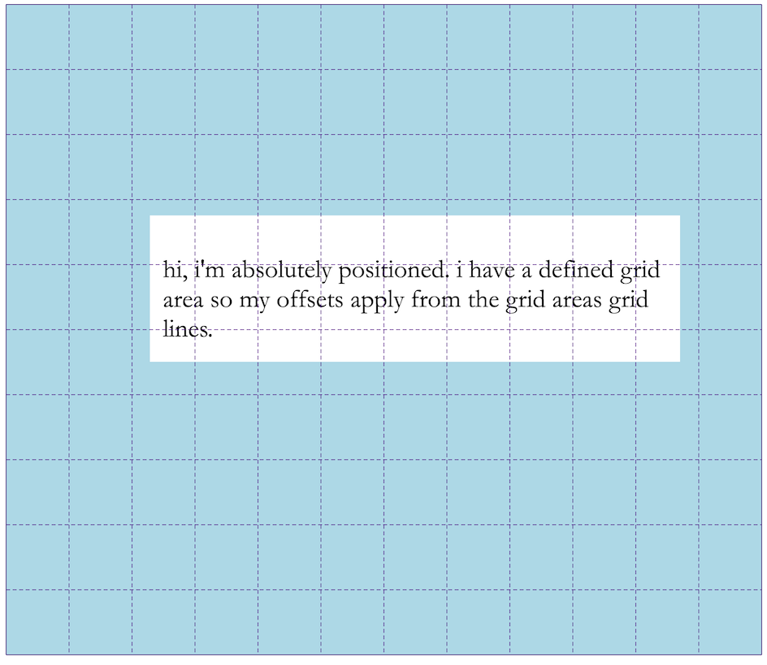

CSS Grid Layout and Absolute Positioning
April 26, 2017A quick explanation of absolute positioning when used with CSS Grid Layout.
position: absolute; & css grid layout.
CSS Grid Layout allows elements with absolute positioning to be placed along a grid containers grid lines. But as with any elements that use absolute or fixed positioning things can get weird in a hurry if you’re not careful. Here’s what the spec says about absolute positioning:
If an absolutely positioned element’s containing block is generated by a grid container, the containing block corresponds to the grid area determined by its grid-placement properties. The offset properties (top/right/bottom/left) then indicate offsets inwards from the corresponding edges of this containing block, as normal.
CSS Grid Layout Module Level 1 -- 10. Absolute Positioning
how it works.
When setting up your grid, add position: relative; to the grid container:
.grid{
display: grid;
grid-template-columns: repeat(12, 1fr);
grid-template-rows: repeat(10, 1fr);
position: relative; /* creates absolute positioning containing block */
}
.absolute-item{
position: absolute;
top: 20px;
left: 100px;
bottom: 40px;
right: 100px;
}This will create an absolutely positioned item that behaves the same way it would if its parent had its display property set to block;.
See the Pen ee10495ea7f47a81e3abe7960f6af159 by Josh Vogt (@josh_vogt) on CodePen.
If you define a grid area to contain the element the offset properties like top and left will apply to the outer grid lines of the absolutely positioned element. In this case, the abspos item has been given a large grid area defined as:
.grid{
display: grid;
grid-template-columns: repeat(12, 1fr);
grid-template-rows: repeat(10, 1fr);
position: relative; /* creates absolute positioning containing block */
}
.absolute-item{
grid-row: 4 / 7;
grid-column: 2 / -1;
position: absolute;
top: 20px;
left: 100px;
bottom: 40px;
right: 100px;
}You can see the example on CodePen here but it’s best to see what’s happening using Firefox’s grid inspector:

The abspos item is aligned to its grid area and the offsets are applied after its position in the grid is applied.
how absolute positioning impacts grid layout.
One thing to keep in mind when using position: absolute on an element of a grid container is that the normal rules of absolute positioning apply. This means that while you will be able to align the element to the containers grid lines, the positioned element won’t take up any space in the grid nor will it effect the layout of other grid items.
This CodePen demonstrates a simple grid with an aboslutely positioned element:
See the Pen CSS Grid Layout - Item Placement & Absolute Positioning by Josh Vogt (@josh_vogt) on CodePen.
The grid items in this demo are layed out using numeric indexes and spans, auto placement and absolute positioning. Absolute positioning allows you to place grid items above or below the positioned element. Overlapping grid items can also be done by assigning items to the same parts of the grid using the grid-row, grid-column or the grid-area but this will impact how other grid items are aligned to the grid.
summary.
- absolutely positioned items can be aligned to either a grid container or a defined grid area
- if an aboslutely positioned item is assigned a grid area, offset properties area applied based on the grid areas grid lines
- as with anything that is absolutely positioned, it will be pulled from the document flow and will not impact the layout of other elements
Learn more about CSS Grid Layout.
The two easiest things to do if you want to learn more about CSS Grid Layout is follow Rachel Andrew and Jen Simmons on Twitter and read their blogs.
Other Resources.
Corrections or comments can be directed to my twitter account @jshvgt.